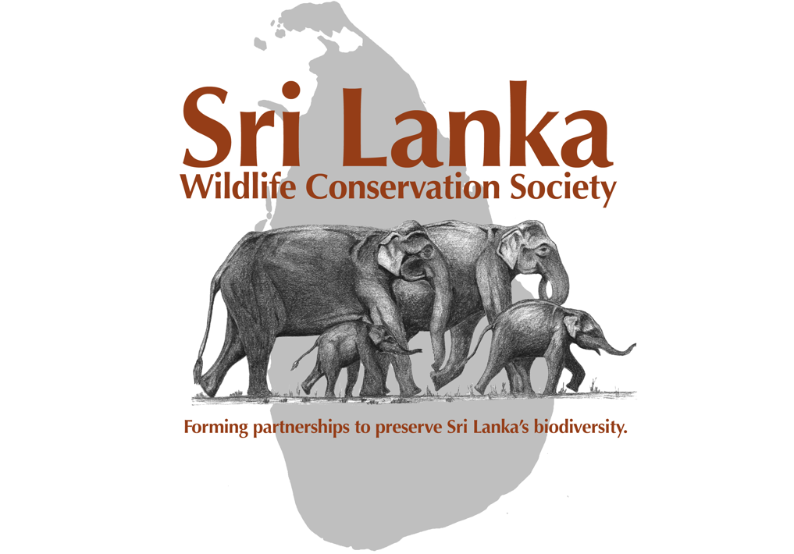

Sri Lanka is a small island nation located in the Indian Ocean, famous for its beautiful beaches, ancient temples, and rich cultural heritage. However, one of the lesser-known but equally fascinating aspects of Sri Lanka is its abundant wildlife. With a range of national parks and reserves, the country is home to a diverse array of species, making it a must-visit destination for nature lovers and wildlife enthusiasts. In this article, we will explore three subtopics related to Sri Lankan wildlife: the country's most iconic animals, the best national parks to visit, and the importance of conservation effortS.
Iconic Animals
Sri Lanka is home to some of the world's most iconic animals, including elephants, leopards, and sloth bears. The Sri Lankan elephant is one of the island's most well-known species, with the country boasting the highest density of elephants in Asia. Leopards are another iconic animal that can be spotted in several national parks, including Yala National Park and Wilpattu National Park. Sloth bears, which are listed as vulnerable by the International Union for Conservation of Nature (IUCN), can be found in the dry zone of Sri Lanka, particularly in the national parks of Minneriya and Kaudulla.

Best National Parks
Sri Lanka has a range of national parks and reserves, each offering a unique wildlife experience. Yala National Park, located in the southeast of the country, is one of the most popular parks and is renowned for its leopard sightings. Udawalawe National Park is another must-visit destination, particularly for elephant lovers. The park is home to over 500 elephants, making it one of the best places in the world to see these majestic creatures up close. Wilpattu National Park is the largest national park in Sri Lanka and is known for its beautiful lakes, dense forests, and diverse wildlife. Other notable national parks include Minneriya National Park, Horton Plains National Park, and Sinharaja Forest Reserve.
Conservation Efforts
Conservation efforts are crucial to protect Sri Lanka's diverse wildlife. The country has implemented several measures to protect its animals, including creating national parks and reserves, and implementing anti-poaching laws. The Sri Lankan government has also partnered with several conservation organizations to support various conservation initiatives, including elephant conservation and reforestation projects. Despite these efforts, many species in Sri Lanka are still threatened by habitat loss and poaching. Therefore, it is important to continue to support and fund conservation efforts to ensure the protection of Sri Lanka's wildlife for generations to come.

In conclusion, Sri Lanka is a fantastic destination for wildlife
enthusiasts, with its diverse range of animals and stunning national
parks. By visiting these parks and supporting conservation efforts,
we can help protect Sri Lanka's unique wildlife and ensure that it
remains a thriving and vibrant part of the country's natural
heritage.